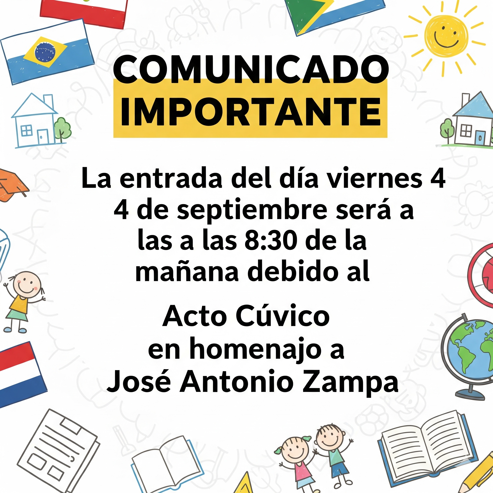

📢 Comunicados de Última Hora
Se convoca a la banda, la promoción y docentes del colegio a asistir al desfile del aniversario del Kinder José Antonio Zampa.
Se comunica que la entrada del 4 de septiembre, día viernes, será a las 8:30 de la mañana debido al acto cívico en homenaje a José Antonio Zampa.
